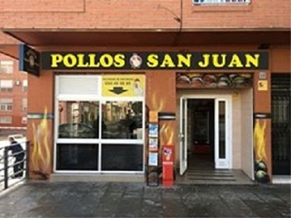
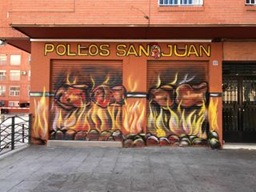
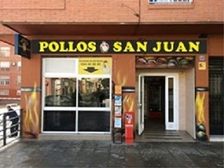
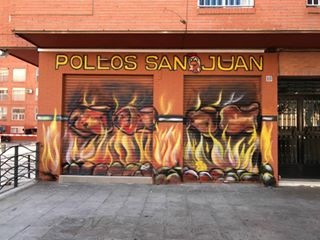

Quienes somos
Pollos San Juan es un asador de pollos ubicado en la C/tal desde Enero de 2017. Hacemos unos exquisitos pollos asados con champiñones que es nuestra especialidad. Como complementos puedes degustar nuestras croquetas de pollo, patatas fritas, berengenas fritas, pimientos fritos... y para la bebida toda clase de refrescos, cerveza. Hemos introducido hace poco los domingos, la realización de nuestra paella de marisco... No te la pierdas!
Más de 47 años de #pollosSanJuanAlmeria
Pollos San Juan es un asador de pollos ubicado en la C/tal desde Enero de 2017. Hacemos unos exquisitos pollos asados con champiñones que es nuestra especialidad. Como complementos puedes degustar nuestras croquetas de pollo, patatas fritas, berengenas fritas, pimientos fritos... y para la bebida toda clase de refrescos, cerveza. Hemos introducido hace poco los domingos, la realización de nuestra paella de marisco... No te la pierdas!
 



Nuestra historia
Pollos San Juan es un asador de pollos ubicado en la C/tal desde Enero de 2017. Hacemos unos exquisitos pollos asados con champiñones que es nuestra especialidad. Como complementos puedes degustar nuestras croquetas de pollo, patatas fritas, berengenas fritas, pimientos fritos... y para la bebida toda clase de refrescos, cerveza. Hemos introducido hace poco los domingos, la realización de nuestra paella de marisco... No te la pierdas!
Donde estamos
Carrera del Perú, 18 (Almería)- Pedidos 694-483889- Abierto todos los días de 10:00 a 16:00 |